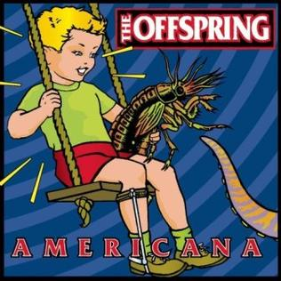

Americana
Publicado por Arthur Baldner em

Americana foi lançado em 17 de novembro de 1998 pela gravadora Columbia Records, e é considerado pela revista britânica Kerrang! como sendo o vigésimo melhor álbum de punk rock de todos os tempos.
Lista de músicas:
- Welcome -
Letras
- Have You Ever -
Letras
- Staring at the Sun -
Letras
- Pretty Fly (for a White Guy) -
Letras
- The Kids Aren't Alright" -
Letras
- Feelings -
Letras
- She's Got Issues -
Letras
- Walla Walla -
Letras
- The End of the Line -
Letras
- No Brakes -
Letras
- Why Don't You Get a Job? -
Letras
- Americana -
Letras
- Pay the Man -
Letras